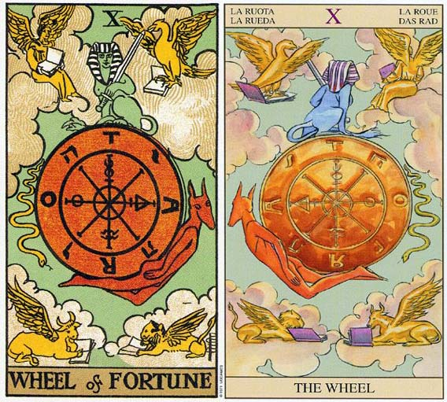

塔罗对我们的读者来说也许是陌生的，然而在西方世界，塔罗却是人们再熟悉不过的东西，从中世纪开始，塔罗就在欧洲的王公贵族和平民百姓当中流传。虽然曾经塔罗一度作为神秘占卜的工具，然而随着时间的推移，人们不断从塔罗当中发掘出深邃的哲学智慧和优美的艺术内涵，于是越来越多的人开始研究塔罗，塔罗也成为一种拥有众多分支的学术研究。尽管如此，塔罗也没有失去它的大众性和娱乐性，它依然是一种人们喜闻乐见的牌类预测游戏。接下来我们开始了解。塔罗牌命运之轮牌面故事
1.所有的大牌都有人物，命运之轮是唯一的例外，可见这张牌独树一格。深蓝色的天空悬着一个轮子，轮盘由三个圆圈构成（教皇的头冠也是），最里面的小圈代表创造力，中间是形成力，最外层是物质世界。小圈里头没有任何符号，因为创造力潜能无限；中间圆圈里有四个符号，从上方顺时针依序是炼金术的汞、风、硫、水，分别与风火水地四要素相关联，是形成物质世界的基本要素。
2.在轮盘左方有一条往下行进的蛇，是埃及神话中的邪恶之神Typhon，他的向下沉沦带着轮子进入分崩离析的黑暗世界。相反的，背负轮盘的狐狼头动物渴求上升，他是埃及神话的阿努比神（Anjbis）。而上方的人面狮身兽是智慧的象征，均衡持中，在变动中保持不变。他拿着的宝剑代表风元素，表示心智能力、思考力和智慧。
3.四个角落的四只动物，从右上方顺时针分别是老鹰、狮子、牛、人，而且他们都有翅膀。这四个动物出自《圣经·启示录》第四章：“宝座周围有四个活物，前后遍体都满了眼睛。第一个活物像狮子，第二个像牛犊，第三个脸面像人，第四个像飞鹰。”耶路撒冷圣经提到四活物象征四位福音书的作者（马太、马可、路加和约翰）。在预测上这四个动物与星座学产生关联，分别代表四个固定星座和四要素，老鹰是天蝎座（水），狮子是狮子座（火），牛是金牛座（土），人是水瓶座（风）。他们都在看书，汲取智慧，而翅膀赋予他们在变动中保持稳定的能力。
塔罗牌命运之轮档案
1.含义：变化、转折。
2.相关语：轮回
3.对应星象：月亮
4.关键字：循环、轮回、转变、好坏交替。
5.每月10日 - 命运之轮，塔罗牌大阿卡那的第10张是“命运之轮”，象征时运的逆转，除了变动本身，世上并没有真正恒常不变的真理。这张牌显示了喜欢赌博的倾向，它会使生命因此起伏不定。事实上，人生不管成功或失败都与命运之轮紧紧相系；所以，生命中的成败输赢都不会是永久固定的。
6.命运之轮 WHEEL OF FORTUNE 代表改变，顺利迈向成功。逆位的代表也是改变，不过是面临困难，要回到隐士反省的课题上。
7.命运之轮意味着你境遇的改变。观察这个改变，并留意它的模式。
8.优点：幸运、好时机到来、非富即贵、善于随机应变、有望升职、命中注定的相逢、一见钟情、婚姻幸福。
9.缺点：劣势、时机不好、生活困苦、毫无头绪、情况恶化、工作易出错、停止前进、失恋、恋情短暂。
10.物语一 【Rider-Waite】
轮子不断地转动，代表不停息的宇宙和人生的沈浮。
狮身人面兽负责轮子的平衡。
轮子上写着Taro或Rota，代表上帝的真理在这个轮子中。
﹝Tarot－塔罗，Tora－真理，Rota－轮﹞
牌的四角是四柱神，都在念书。
轮的左边是蛇，右边是狗头人面神，上方是人面狮身兽。
11.物语二 【颠覆塔罗牌图解速成】
圆圈内的图形是水银，硫磺，水，盐。
人面狮身兽代表重生，狗头人身神代表灵魂的引导者，蛇是死亡带入人。
四柱神代表四元素，十二宫。
12.物语三 【神秘塔罗牌入门】
中央为命运之轮，诉说人从出生到死亡，生命不断流转。
轮的四周为人生的景象。
左手边是平步青云的景象，右手边是苦恼的景象
轮上为三位天使，守护着浮沈的人生景象。
此牌正好位于中央位置，表明宇宙轮回的存在。
命运是有起有落的，风水轮流转。
13.物语四 【神秘塔罗牌进阶】
三位女神不断地转动巨大的纺车轮，编织着人生的幸与不幸。
最年轻的克罗多是命运之线的纺织手。
中间的拉卡希斯把不同的命运线分开，
阿多罗斯在生命将尽之际，剪断生命之线。
命运女神们决定众生的命运。
14.物语五 【塔罗牌灵测游戏】
这张牌的意义，透露我们要有承受命运的能力。
挫败后有复苏的机会，大红大紫后也会有沈潜。
左上角象征马太，象征耶稣的人性。
右下角象征马可，象征基督的王者风范。
左下角象征路加，象征牺牲。
右上角象征约翰，象征神圣的精神。
15.物语六 【Tarot of Ceremonial Magick】
OTAR------净化
ROTA------轮
AROT------警戒
ORAT------敬畏
TORA------真理
TROA------门
AT OR-----你是
RATOT-----震动
轮上的希伯来文是耶和华。
16.物语七 【激情塔罗】
此牌又称宿命。
塔罗牌命运之轮牌面解释
1.牌面上命运之轮上面是象征天使的斯芬克斯，下面是魔鬼，四周围绕着象征命运中的各种境遇的女神、天鹅、毒蛇等。你的命运有如那命运之轮在塔罗牌中不停的转动，时而好时而坏，这是 一种公平的循环。命运之轮也许会在你喜欢的角度停下来，这使你有不可思议的好运气；而它也会在你不喜欢的角度停下，你就会倒霉。不管你愿意与否，命运就是如此无情，况且生命本身就是处在不断的变化之中，这就使你的生命中充满了挑战和刺激。
2.解牌时，要抓住“命运”就要先理解什么是“变化”，相信没有绝对的事情就可以了。不过，随着你学习的深入，就会发现“命运之轮”蕴藏的很多奥秘。
塔罗牌命运之轮牌义解释
1.充满了这么丰富的象征，总而言之，命运之轮要表现的就是个人命运的不可预测。当命运之轮转动时，原本在上面的幸福人们就转到下面的悲惨世界，下面的人也转上来了，俗语说风水轮流转，正是命运之轮的写照。人生犹如潮起潮落，日复一日，没人能够逃脱自然的循环。通常命运之轮象征的命运不是人力可以控制的。就像车子抛锚害你错过班机的懊恼，或是中了头奖乐透的狂喜，但得意时莫忘失意苦，失意时也莫一蹶不振。其实虽然个人命运看似难以预料，整个宇宙运行的法则事实上却非常有秩序，如同赌客到拉斯维加斯赌博，每个人输赢看手气，最终的庄家（赌场）却总是赚钱。也好比幕后控制阿瑟王轮子的那双手，接下来到底要往哪里转，那双手总是知道。
2.命运之轮转动不停，出现的时候，主要表示转变。正位的时候-这个转变似乎是幸运的，如同它的星座对应木星也代表幸运：逆位的时候，似乎是不幸的。所以在预测上，命运之轮正位时，犹如轮子往上转，在感情方面，给双方一种姻缘天注定的感觉，也许是一见钟情，也是新的开始。工作财运方面也常有意外的惊喜。逆位时，犹如轮子往下传，此时就没那种好运了，而且当事人有可能拒绝转变，拒绝接受这亘古不变的运行犹如逆天而行，绝对赢不了。所以建议当事人，别忘了轮子总是不停地转，此时幸或不幸在长远来看也许会出乎意料，因此请接受这个改变，找出最适合的对策。
3.转变无论幸或不幸，总是一个契机。此时面临人生的转折点，最好把握改造命运的良机。正位的时候，显示当事人能够把握难得的机会，逆位时，可能暗示当事人无法把握良机。此时建议当事人，人生无常，忧患无益，只有把握当下，抓住机会，才是最重要的。如果有事情很久没有解决，命运之轮出现带来转变，带来机会，带来好运，很有可能获得极大的进展，而且这进展通常不是努力得到的，反而是莫名其妙从天上掉下来的。
4.命运之轮是10号牌，是二位数字的头一个，因此命运之轮是大阿尔卡那的一个新的循环，也是1号魔术师（新开始）的再现，同时更隐含了0号愚人（10=1+0=1）的无限潜力。无论时局如何变迁，所有的现象都只是暂时的，新的循环随时会再开始。
塔罗牌命运之轮解牌参考
正位
1．贵人出现，提供了前路的指引，给予了必要的能量。
2．命运之神的眷顾，让计划得到了好的发展。
3．事业到达了一种巅峰的状态，最高最强大的时刻马上来临。
4．运气不错，好的机会展开。
5．积极向上的生活状态，出现了好事情。
6．拥有梦想中的恋情，一见钟情。
逆位
1．在拼命抵抗某些事情的发生。
2．面对不好的转变要冷静接受。
3．顺序颠倒。
4．不幸的转变。
5．没有考虑到的外界因素。
6．恋情不顺，渐渐走向低谷。
塔罗牌命运之轮正位释义
1.工作学业：好运降临、确定前途、得到意外的好消息、弹性的计划、得到他人援助、改变学习方式将会有所收益、意外的好消息、弹性的计划、考试运气非常的棒。
2.恋爱婚姻：命运的邂逅、一见钟情、遇到新的心仪对象、会突然采取行动告白。
3.人际财富：临时的收人、得到意外之财、意外得到贵人相助、面对世事能随机应变、社交环境有利。
4.健康生活：性情好转、疾病痊愈。
5.其他：受兴趣影响较大、获得机会、需要立即行动。
6.基本含义：十分懂得把控时机、有机会降临、转变期、意外的收获、当机立断、幸运降临、恢复原状。
塔罗牌命运之轮逆位释义
1.恋爱婚姻——不够主动、彼此个性不合、不顾后果的交往、脚踏两支船、单相思、第三者插足、对待恋情不够老实、与异性交往暧昧不清。
2.工作学业——偏科现象严重、墨守成规以致失败、缺乏能力或自信、行为不检点、考试失误。
3.人际财富——缺乏道德观念、懒好人、左右为难、对朋友过于抉剔、财务危机、财不露白、遭遇债务纠纷。
4.健康生活——身材不匀称、没有办法控制体重、偏食。
5.娱乐爱好——对逛街购物已赶乏味、对任何事物都没有办法产生长久爱好。
6.基本含义——不公平、有始无终、以自己的意见去断定、事事不能两全、不均衡。
倒立的命运之轮
1.我们都希望拥有越来越好的人生，并且可以一直保持如此，然而如果挑战一直没出现的话，我们就很难学习到什么。当命运之轮倒立时，所发生的改变可能是比较困难的。它暗示要努力对抗这些事件，而且通常都是徒劳无功。宇宙中蕴含着比每一个个体还要伟大的力量，所以我们必须要努力去理解，这项改变到底要教会我们什么。
2.或许在你的生活中会有一种重复的模式，这可能意味着生命再度以同一种形式的问题，来展现其挑战性，好让你学会此问题中的教训。季节总是在更替着，而生命所展现的机会却越来越少，因此你更应好好反省过去的所作所为。
塔罗牌命运之轮大体上的意义
1.生命是变化无常的，当牌面上的命运之轮是正立时，改变似乎是有利的；而当它倒立时，改变又似乎是有害的。我利用“似乎”这种字眼，因为它只是改变，而似乎有害的改变，事实上可能会是一种祝福。
2.我举一个发生在我朋友身上的例子。尼古拉斯在结束了为期十二个月的假期之后回到家里，并申请待业津贴。政府拒绝给付他任何津贴，因为在他去度假之前，自己做了一阵子生意，所以还差六个月才有资格申请。他很挫折，只好向朋友借了一点钱，投入一项生意。去年这项生意为他赚进了超过八万美元，而且他预期在三年内。每年会有十五万美金的营业额。如果他申请到待业津贴的话，他可能就会开始为别人工作。如此一来，他就会错过一个开始似乎困难重重，结果却鸿图大展的机会。你必须超越现状，将眼光放远，来观察生命的消长。当潮水高潮时，你可以在生命当中获得许多，而当潮水消退时，可完成之事就少了许多。有一个古老的中国故事，恰好是形容这种情形。
3.有一位老人，他有一个儿子，一匹马，村落旁边有一小亩田。有一天他的马脱缰而逃，村民们纷纷跑到老人家中来采访他，并对老人的不幸深表遗憾。“不幸？你们怎么知道这代表不幸呢？说不定还是个好兆头呢！”他说。他们都带着些许困惑离开老人的家。几个星期之后，这匹马回来了，而且还有一群野马跟随着他。现在这老农夫拥有了十四匹马。村人又纷纷的前来拜访它，告诉老人，他是多么地幸运。“幸运？你们又怎么知道这是好运呢？这或许还是个麻烦呢！”他说。一个礼拜之后，他儿子从其中一匹野马身上摔下来，被马蹄踩中，双腿几乎成了残废，终其一生都得跛着腿。那些村民们又再度造访并表达安慰之意。“倒霉？你们怎么知道呢？这可能是老天爷的祝福呢！”老人如此回应他们。隔年皇帝向邻国宣战，所以四肢健全的人全都被征调上战场。而老人的儿子却由于残废而免于征战。这场战争打了半年，村子里被征调去打仗的人都阵亡了。其他村民依例又前往老人家道贺。“走运？你们怎么知道这是一件幸运的事呢？它也有可能会是个困扰呢！”通常命运之轮象征你生命境遇的改变。或许你并不了解这些改变的原因，不过在这里，你如何因应改变是比较重要的。你要迎接生命所提供给你的机会，还是要抗拒改变呢？此牌正立时就是在告诉你，要去适应这些改变。
4.就普通的角度来看，命运之轮暗示生活上的改变。你的事业正有起色，或某个两性关系正变得更充实。
5.塔罗牌命运之轮两性关系上的意义
命运之轮暗示一个两性关系日趋圆满的机会或可能性在增加时，解释为：改善情况的机会越来越近了。我的顾客说出一件事情来证实这个论点：他的伴侣即将要完成她的医学学位，如此他们就可以去旅行，而且今后也可以拥有更好的生活品质。
塔罗牌命运之轮爱情
正位
1.你们的相遇从某种角度来讲是命运的最美安排，即使你们最终没能走到最后拥有美满的结局，也会拥有一个不错的回忆！从某种角度来讲你们要有结果概率是非常大的，但也要注意的事相遇是你们的开始，但并不代表结束一定是在一起，虽然你们拥有很深的缘分，但缘分天定事在人为，如果你希望你们的感情有结果，还是得靠双方努力哦。
2.对人感情的想法：在你/他看来，对方是个难以捉摸的人，一会儿是晴天一会儿又下雨，难以捉摸的透。而自己也不断的跟随他的心情变化而变化，不过这感觉似乎还算ok。在你/他心里算是默认了对方作为自己恋人或者准恋人的角色，代入感还算蛮不错的拉。
3.建议：面对你们感情的状况，更建议是顺其自然比较好，别刻意的改变什么，只要做好未来世事无常的心理准备即可，不断的向着自己的目标前进。
逆位
1.你们的相遇似乎是命运之神开的一个玩笑，一见钟情又或者再见倾心什么的很轻易的就发生在连个完全不合适的两个人身上。你们的相处中就好像安放了定时炸弹一般，随时随刻的有可能就地爆炸！除了性格上的冲突外，你们双方要走到一起的现实问题也是一个很大的阻碍，这使得在一起生活的你们要么疯狂的玩乐来让自己忘记，要么不断的吵架来发泄心中的不满不安，总之你们的感情是混乱的。
2.对人感情的想法：其实在你/他的心里非常清楚对方并不是合适的恋人的人选，并且你/他也很清楚这段感情中到底缺陷是什么。只是对方真的在你/他心中占据了重要的位置，所以无法放下对方的家伙只能是痛苦又欢乐着承受这段感情带来的一切。
3.建议：你需要找个时间让自己对对方的感情冷静下来了，要知道本身你们的关系就是没有结果并且不长久的，放手只会是唯一的结果，而你要做的就是让自己如何的不那么痛苦的走出这段感情。而冷静下来，慢慢的放下是最好的选择。
塔罗牌命运之轮在工作方面的启示
1.如果把塔罗牌22张大牌看成两轮对称的结构，这是塔罗牌第一轮的王牌，生命前半段旅程在此作一个暂时的总结，和第二轮的王牌“世界”遥相呼应。
2.而宇宙是循环的，结束便是开始。
3.人的成功多少都需要机运，这张牌讲的正是“风水轮流转”里面的“十年河东，十年河西”。时候不到，就算再好的点子、再厉害的企划案，没用。不要说通不过，得不到支援，就算勉强推出执行，照样死得很惨。点子无罪，怪就怪天不时、地不利、人不和，你没有爬上命运之轮。
4.命运之轮的图标，是一个好运和坏运轮流三百六十度转动的轮子，轮子不停歇，人与事业的荣辱起伏盛衰，也不会停歇。
5.现在不是你的“时”，就造不了你的“势”。反过来说，现在能吃得开兜得转，必然各方面因缘都具足。
6.到底“英雄造时势”或“时势造英雄”？从命运之轮就能看出，这根本只是个头脑体操般的问题。没有机运，英雄徒呼奈何；没有头脑与才情，时代的机会就在眼前，也没有人能顺势而上，扭转乾坤，利益大众。
7.够有智能的人，在顺势时保持谦卑与谨慎，因为他知道，轮子还在转动，万物变化不居。逆势时，保持努力与蓄积，因为他知道，轮子还在转动。
8.有时候，看到某些走运几十年的人，使你会误以为他的轮子只有好运没有坏运，但是，往往那只是你没看到他的整体“生命财富收支表”有什么进出罢了。
9.人间没有十全十美的人与事，但从另一个角度说，到处都有完美的踪迹闪现。
10.往上坡走的时候，虽然累，想到山顶的风光却希望无穷；往下走的时候，除了累，想到今不如昔、明不如今，心头的凄惨与不甘就更折磨人了。
11.多少英雄好汉才子佳人，受不了时不我与，明明在外人眼中还过得去的处境，却可以把他们逼上绝路。为什么不想开一点，看远一点，“留得青山在，不怕没柴烧”，青山就是你的命，有命有心有健康，就能伸长手臂扒着轮子，等到再往上转的那一天。何况，舞台不会只有一个，人也不是非得线性发展，不能当丛林的狮子，还有溪流里的游鱼可当，哪种才是你能快乐的天命，还未可知呢。
塔罗牌命运之轮图案占卜应用
1.「命运之轮」是要表达命运的恒常与变化的对应，真正永远不曾变更的，就是不断地变化、就是世事无常。这张牌的整个画面安排其实是环环相扣，很有结构和规律的，这代表命运其实自有其律。然而容纳的系统非常多样，举凡魔法、炼金术，埃及神话、泛基督教的内容都囊括在其中。这个复杂性就暗示着，即使是宗教和信仰也莫衷一是，让人难以捉摸命运背後的旨意。
2.轮盘里面刻划了炼金术符号，还有犹太教系统和神秘学英文字母。从核心发源出的八方轮辐线条，代表各个方位和各时序的变化，所以这张牌具有时间和空间的变化性不稳定性。说明了对於时刻与方位空间等这些明确的要素，是比较难论断和探知的。由内向外的各层级力量连结呼应，象徵宇宙变化的规律是超乎人的掌控之内的，规律之外还有规律，各是殊途陌路的选择，人生与灵魂的走向未知，无法证明或探究，只有顺服与信任。
3.炼金术符号安放在轮中，代表物质变化，同时也是本质的转换，更是精神状态的变化。这四种化学/炼金术元素的相对位置也有意义：水银也表示灵魂、超意识，也是自我定位的选择，分别心与沟通交流。对面位置的水，表示炼金术的一个基本过程～溶解，则是人生和意识的调和与融合。硫磺造成了人的存在感，是生活中的情绪和意志、行动。对面的盐反映了或肉体和其惰性，因而导致了人生的停顿和阻碍。
4.轮盘的最外圈，是用上帝来象徵，是律法与上帝的指示，以表明命运是无法由人自己控制的。四字母圣名的显现，表示一切尽是神的旨意，也是命运的安排，是无从抗拒，必须顺服的，我们能做的只是了解或认识。在上帝的圣名间穿插了祂所制订的律法，却又反向隐藏了另一神秘学体系～TARO塔罗。
5.这是伟特的翻案意图，将圣化的图案中藏着塔罗，故意把塔罗从troa转过来，於是选择塔罗就等於是选择逆转命之轮或者正转命运之轮。塔罗就是真理，TARO是宇宙运行的真理，落实在现实界的各种样貌的繁多变化。四英文字母的排列组合，更是代表各种现象出现机率的不同安排，并且也暗示你必须从中的选择，无论变化如何，都必须因应和走出一条路。
6.轮盘旁边加上三神物的操控运转，更表明了命运的不可探知与无可捉摸，以及无可奈何、无法抗拒这些多面向的力量。阿努比斯正要上昇，并未带走人的生命，却不知下一刻是要找向谁。蛇的莫测和多变，会如何引导人心的走向，更是不得而知。
7.人面狮身司芬克斯持剑，表示告诫着我们，无论环境事态如何演变，自身遭遇处境如何，都要维持神智的清明，以睿智的意志，或可掌控命运。人面狮身位於画面的正中轮上，这个姿势的和整体环境状态的持续，似乎就是掌握幸运、抓紧幸运的关键。
8.四个角落的四活物的形象并不鲜明，代表当事人对事态命运的不明就里，也代表命运的变化如同隐藏的秘密，只是隐约的捕捉到而并没有被清楚的认识了解。四活物面对经书，代表不断持续加强某种意念，也是不断读取或散布知识资讯的意思，当然也有宣判、宣扬、报导的意味。四活物执掌了四大种类各方面的事项和意念，主要是套上四元素，至少代表了情感、金钱、权势和心智状态等几个面向。
9.命运之轮盘转动代表命运的转动，画面显示的静止状态，代表决定性的关键。占问事件的变化甚至有可能与整个人生的命运相关，可以不只局限在问题本身。整张牌这麽丰富的图案，其实是为了针对各式问题而变化回应，并可扩大旁触到其他层面，也能暗示某种课题的循环和转折。占卜时出现这一张牌，无论遇到什麽问题都相同，特别代表急遽发展的事态转折和变化，显示了时间性的不可测，与原先或过去的状况极大差异，而这个变化是极具重要性和决定性的。
10.根据伟特自己的定义，这张牌的正位置代表好的变化，因此无论占问任何问题，在切题的时间内都是好的演变。这时候静止的画面，就代表补获了幸运的状态。只是要注意，这个状态并不见得能持续稳固，变动的因子就藏在画面许多图案当中，因此往後随时都还能再度转动，别种方向的命运之轮，就与当时的幸运之路有所偏离了。
塔罗牌命运之轮(伟特塔罗篇)
1.伟特塔罗的命运之轮图像深受Levi的影响。图中轮子四方T、A、R、O四个字母可以从不同角度出发去念。在TARO四字母之间的是希伯来字母Yod、Heh、Vau、Heh，为上帝之名。Levi将这个命运之轮称为“Wheel of Ezekiel（伊齐基尔之轮）”。命运之轮的四个角落里画着四活物，使得这里的命运之轮图像与世界牌产生关联。
2.在轮子的中间一圈里是炼金术的符号，从上开始顺时针方向分别为贡、硫磺、溶液和盐，这四个符号可解释为身、心、灵三者的结合。拥有人形状的胡狼头动物名为Hermanubis，意为Hermes和Anubis的组合，他是灵魂的引导者，代表善。蛇是Typhon，他的希腊名字为Set，他是Osiris的邪恶兄弟。在轮子顶部的狮身人面兽代表了智慧和平衡。伟特塔罗的命运之轮代表的是一种改变的力量，正如哲学家黑格尔的由“正题－反题－合题”所构成的辩证法。有限且无常的世界被灵魂以及灵魂的运作所渗透着。这张牌代表改变、对改变的知晓、以及好运——善神上升，恶神下沉。
3.命运之轮的数字为10。10＝1＋0＝1，所以在这里我们又重归于1。10包含了所有古希腊数学思想中代表和谐的数字：10＝1＋2＋3＋4（2:1，3:2，4:3中的四个数），所以也包含了所有的美与秩序。在几何学里，代表完美的几何图形是一个圆圈，这个圆就是第十张牌命运之轮中的那个圆，圆同样也代表了循环，循环和10亦有关系，因为10就是重新回到1的那一点。
4.另外卡巴拉生命之树上以十源质作为一个整体的结构，所以在西方神秘学思想中，命运之轮也可以表达人类完整的旅程：物质（战车）与精神（隐士）的旅程。
塔罗牌命运之轮(古塔罗篇)
1.美德与沉稳的隐士将我们带向洞见的顶峰，通过这种来之不易的洞察力来使我们看到生命内在的运作方式，并以此来获悉未来命运的安排。从命运中我们可以看到每一个人都必须经历的苦难与死亡。作为一名神秘主义者，战胜命运、超越死亡、准求灵魂的永恒便是他们的目标和挑战。但是截止到目前——经历到第十张大牌为止，我们尚不足以克服命运，所以仍必须谦恭的顺从命运的安排。
2.在古希腊神话中，有一些与命运相关的女神，Tyche（堤喀）便是其中之一，是幸运女神；然后，Nemesis（内莫希斯），复仇女神。堤喀与内莫希斯是好运与厄运的象征，这在梵蒂的艺术作品“Triumpho Di Fortuna”中可以看到。在古老的艺术中，堤喀的符号是舵，也就是方向舵，代表她掌控着人们的生命方向，她手中所持的“丰饶之角”是丰盛的象征，当时的人们认为每一座城市都拥有一个保护该城市的堤喀。内莫希斯的符号则是半狮半鹫。其他与命运联系的女神还有Necessity，她是掌管地球与宇宙之轮的女神。而罗马的命运女神Fortuna（福尔图那）就是上述女神的综合。
3.塔罗符号学：命运之轮
4.在柏拉图的《理想国》中，我们看到了死后的灵魂轮回之旅。而Necessity-Fortuna的命运之轮实际上就是宇宙的心轴。之前我们经常提到，古人认为地球是宇宙的中心，而星空上可以依靠肉眼看到的七个星体按各自的轨道围绕地球周旋，这七个星体被当时的人们称为“七大行星”，它们分别是：月亮、水星、金星、太阳、火星、木星和土星。
塔罗符号学：命运之轮每一颗行星都在各自的球体轨道上运行，它们自下而上构成连接地球与天国的“阶梯”。而灵魂进入宇宙沿着七重阶梯下降到地球，在地球上“披上”肉体，这便注定了要顺从于命运与死亡。
5.为了突出“物质世界是归命运与死亡所掌控的”这一观点，柏拉图在Necessity身旁加入上她的三个女儿——命运三女神，命运则被比喻成一根一根的丝线，三位女神所掌管的每一根丝线就相当于一个凡人的生命，所以又可称生命之线。命运三女神的Lachesis（拉克西丝）代表了过去和生命的起始，她制造丝线；Clotho（克罗托）代表了现在和生命近阶段，她牵拉与衡量着丝线；而Atropos（阿特洛波斯）代表未来和生命的结束，她负责切断丝线。
6.在中世纪，宇宙被象征为一个轮子，而命运女神福尔图那则处于轮子的中央，最早涉及到此符号描述的资料之一便是Boethius在524年所著的The Consolation of Philosophy。
7.命运女神福耳图那的命运之轮图像中画着四位男性人物在轮子上沉沉浮浮，这里虽然没有画出命运女神的三个女儿，但是图上的三名男性人物则实实在在地反映出了在命运的掌控下的生命过程。这副图像就是出现在维斯康提-斯佛扎塔罗——历史上最古老的塔罗牌之一中的命运之轮的牌图里。
8.塔罗符号学：命运之轮在维斯康提－斯佛扎塔罗的命运之轮牌图里，福耳图那蒙着双眼位于轮子的中央，蒙蔽双眼象征无视一切与毫无理由。福耳图那的轮子上有四个男性人物。左边一个爬轮男子，代表一个萌芽状态，其身后的文字可译为“我将主宰”。代表了过去，受拉克茜丝支配。轮子顶上的男子坐着，为“我在主宰”，代表现在，受克罗托支配。在轮子右边一个男子随着轮子下降，为“我已主宰过”，代表未来，受阿特洛波斯支配。而在轮子底部，一个趴着的老者，为“我已不再主宰”，这个图像代表死亡的状态，是发生在阿特洛波斯剪断生命之线之后，同时也可代表脱离命运的掌控。这第四个人物暗示的是死亡不过是命运之轮的另一面，是前往转世轮回、进入下一轮命运掌控的的一个步骤而已。
9.“转世轮回”是柏拉图和新柏拉图主义者们的哲学学说中的重要环节。新柏拉图主义者们的观点有受到过早期基督教的影响，但早期的基督神学者们对转世轮回学说是有争论的，在公元553年，东罗马帝国皇帝召开了一次会议并宣称转世轮回说是异端学说之后，虽然福耳图那的命运之轮图像得以保留，而且其轮回学术的寓意是明显的，但是中世纪的教会却不肯承认这副图像转世轮回的象征寓意。
10.但是有证据显示，1、十五世纪仍旧有许多人认出了这个图像中轮回转世的寓意；2、十二至十三世纪，轮回信仰再度被西班牙的苏菲派和卡巴拉主义者传到西方；3、轮回亦是卡特里派（基督异教派）信仰中的一部分。虽然卡特里派在十三世纪被基督教无情的消灭，但卡特里派的思想以及对文化的影响犹存。所以出于以上任何一种理由，基督教发现有必要再度重申基督教不信仰灵魂的轮回转世一说，于是他们在1274年的里昂会议和1438年的佛罗伦萨会议上再度提出了这一点。可是，到了1460年，Ficino将柏拉图的哲学理论翻译成了拉丁文，这使得很多学者们第一次意识到原来这位伟大的哲学家也信奉轮回转世，由此轮回之说才逐渐为多数人所接受。
11.在十五世纪末期至十六世纪早期的意大利木刻塔罗中，命运之轮图像的风格与维斯康提－斯佛扎塔罗中的风格一致，只不过木刻塔罗中少了命运女神福耳图那，此外，木刻塔罗中轮子上四个人物的形象有所简化，随轮子上升的人物和轮子顶部的人物变成了动物。而在马赛塔罗中，命运之轮中所有人物都被简化为动物，轮子上的三只动物象征人类的愚蠢，右边一只动物为愚蠢的欲望而想要攀上轮子的顶端，轮子顶端的动物头戴王冠手持宝剑暂时居于统治地位，左边随轮子下沉的动物证明了高居轮子顶部的情况只是暂时的，总会有落幕的时候。
12.塔罗符号学：命运之轮此外，命运之轮上的这三只动物也象征了命运的过去、现在和未来。但是马赛塔罗的命轮没有将第四者也就是位于轮底象征死亡的形象描绘出来，也许这种设计的意图便是不想将轮回的思想表达出来，也可能仅仅是绘图者希望将图像简化。但是，维斯康提－斯佛扎塔罗命运之轮图中的四个人物却分别有在马赛塔罗的四张牌里表达了出来——反映命轮图中的四个人物的四张牌分别是战车、隐士、吊人、以及死神：战车代表沿着轮子上升的人，他朝着命运前进；隐士则是凭借他的精神攀上了顶部；吊人头朝下的沿着命轮下沉；最后死神意味着死亡，象征该人在命轮的底部消失。
13.不论是否带有轮回转世的寓意，命运之轮就是时间、命运与死亡的象征，代表了追逐俗世短暂名利的愚昧和愚蠢。命运之轮告诉我们，真正的财富其实深驻于灵魂，要获得它们就必须实践美德，而不是去碰运气。就是这层寓意使得这个图像受到基督教会的重视，也就是这层寓意使得原先轮回思想的寓意被人忽略。
塔罗牌命运之轮解释网友问答
塔罗牌命运之轮解释问题一：塔罗牌中命运之轮逆位什么意思？
网友解答:命运之轮的数字编号为10，代表你的人生是一个充满冒险和挑战的人生 命运之轮的详细含义： 牌面上命运之轮上面是象征天使的斯芬克斯，下面是魔鬼，四周围绕着象征命运中的各种境遇的女神、天鹅、毒蛇等。你的命运有如那命运之轮在塔罗牌中不停的转动，时而好时而坏，这是 一种公平的循环。命运之轮也许会在你喜欢的角度停下来，这使你有不可思议的好运气；而它也会在你不喜欢的角度停下，你就会倒霉。不管你愿意与否，命运就是如此无情，况且生命本身就是处在不断的变化之中，这就使你的生命中充满了挑战和刺激。 解牌时，要抓住“命运”就要先理解什么是“变化”，相信没有绝对的事情就可以了。不过，随着你学习的深入，就会发现“命运之轮”蕴藏的很多奥秘。 当牌面正立时，你会发现以前所付出的无谓努力，现在反而成了你前进的动力，先前的付出终于有了回报。命运之轮是由命运女神转动的，所以你俩之前的风风雨雨都将过去，关系将进入稳定的发展阶段。 当牌面倒立时，命运之轮正转到了你人生最低迷的时刻，也许你有些无法接受，但是若能以平常心来看待，这无疑是你成长的最好时机，需要认真面对。感情方面所受到的挫折近乎让你崩溃，然而你还在不断努力。虽然现在你面前是无数的荆棘，但坚持过去将是平坦的大道。 正位：幸运、好时机到来、非富即贵、善于随机应变、有望升职、命中注定的相逢、一见钟情、婚姻幸福 逆位：劣势、时机不好、生活困苦、毫无头绪、情况恶化、工作易出错、停止前进、失恋、恋情短暂 送你个网站，在参考资料里的。祝你玩的愉快^_^
塔罗牌命运之轮解释问题二：我上次玩塔罗牌抽到了命运之轮是什么意思啊？
网友解答:「命运之轮」牌： 如果你抽出了「命运之轮」牌，代表你的牌隐含着世间万事万物变化之奥秘，它深知一切变化为常态，而唯有平心静气地顺着变化走下去，才能看到生命的意义。 因此，任何牌阵和任何问题当中，若是出现代表牌「命运之轮」时，你一定要特别留意这个讯息，它代表了一个重要的转变，也许是渐渐转好，也许是逐渐转坏，但提问者最好顺其自然，如此才能体认到自己的生命课题。 它同样具有护身符的作用：若是你觉得最近运气很差，事事都不顺心，你可以将代表牌带在身边，为自己改变运势，但千万要记住，你得让它保持「正位」，否则你的运气就愈来愈糟了！
塔罗牌命运之轮解释问题三：塔罗牌关于爱情，命运之轮正位这张牌是什么意思？
网友解答:关于爱情？只有在牌阵里所算出来的命运之轮才能确切的说明爱情的问题
如果单张牌的话
正位：关键性事件。新机会。新潮流。环境变化。幸运的开端。问题解决。如果是正位那么在爱情里就系那个当好了。
逆位；连续的不幸，挫折，计划泡汤，障碍。无法修正方向，往坏处发展，恶性循环。如果是逆位那么在爱情里就有些困难重重了，需要注意，需要改进的东西相当多哦
塔罗牌命运之轮解释问题四：个性塔罗牌和灵魂塔罗牌都是命运之轮怎么解释？
网友解答:命运之轮，很好啊，灵魂和个性塔罗都是同一张牌，应该说明你是个表里如一的人吧。这张牌所蕴含的力量挺大的，希望你作什么事都不要物极必反吧。
塔罗牌命运之轮解释问题五：求高人解读塔罗牌【命运之轮】正位！！~网上占卜抽一张的那种，命运之轮正位，看事业，感情，身体。
网友解答:求高人解读塔罗牌【命运之轮】正位！！~网上占卜抽一张的那种，命运之轮正位，看事业，感情，身体。